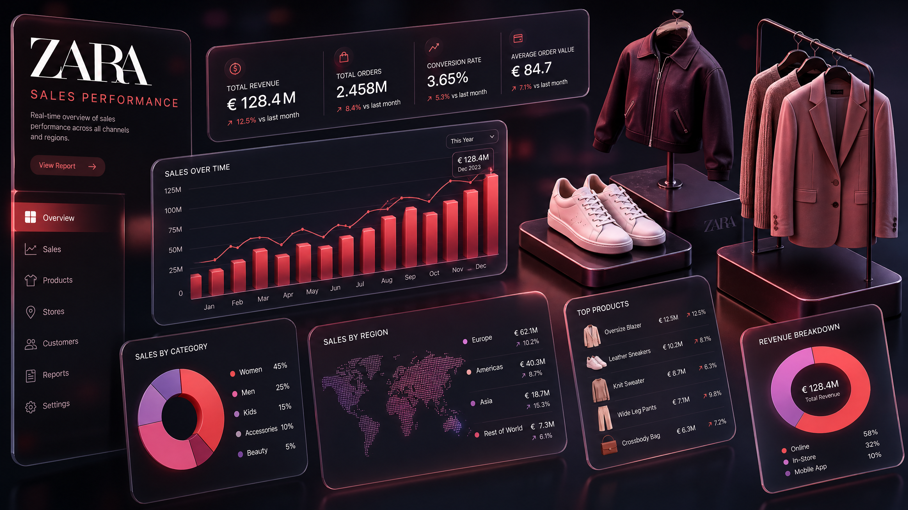

Badr Mohamed
Data Analyst | SQL | Power BI | Excel
Data Analyst | SQL | Power BI | Excel
Data Analyst
Proficient in SQL, Power BI, and Excel with demonstrated expertise in data cleaning, visualization, and trend analysis. Successfully completed projects analyzing insurance cost drivers and COVID-19 trends, utilizing advanced analytical techniques to support data-driven decision-making.
Meticulous attention to detail in data cleaning and validation to ensure accuracy and reliability in all analytical work.
Deep problem-solving capabilities combined with advanced data interpretation to uncover meaningful business insights.
Committed to delivering actionable insights that drive informed decision-making and measurable business outcomes.
Technologies & Tools
What I Offer
Specialized data analysis and insights
Advanced SQL querying with joins, aggregations, window functions, and CASE statements. I specialize in extracting meaningful patterns from complex datasets and performing comprehensive trend analysis.
Applying analytical techniques to identify key business drivers and insights. Experience with customer segmentation, risk profiling, and comparative analysis across multiple dimensions.
Comprehensive analysis of historical data to identify patterns and trends. Skilled in calculating metrics like infection rates, death percentages, and rolling case averages for informed forecasting.
Creating interactive dashboards and reports that transform raw data into visual insights. Expertise in building responsive visualizations that support real-time business intelligence.
Advanced Excel charting and pivot table creation. Proficient in data cleaning, formula development, and creating professional reports using VLOOKUP, pivot tables, and advanced formatting.
Translating complex data into clear, compelling visualizations. Skilled at communicating insights to both technical and non-technical stakeholders through effective visual storytelling.
Designing and implementing ETL workflows. Experience extracting data from CSV and JSON files, cleaning and transforming data using SQL, and loading into structured databases for analysis.
Proficient in relational database design and management. Skilled in data organization, query optimization, and maintaining data integrity across complex database structures.
Expert-level data cleaning and transformation. Experienced in handling missing values, standardizing formats, and preparing raw data for accurate analysis and reporting.
My Work
Data analysis projects that drive insights

Power BI • SQL • Excel • 2025 - Present
Developed an executive-level interactive dashboard synthesizing 3,000+ product records across five categories. Engineered multi-dimensional filtering architecture using parameterized slicers. Identified that premium products account for 40% of revenue despite 15% unit volume; front-of-store placement generates 2.1x higher revenue velocity; seasonal promotions drive 35% incremental lift in mid-range sales.
→ View on GitHub
SQL • Power BI • Excel • 2025 - Present
Examined 1,338K customer records to identify key drivers of insurance charges. Discovered that smokers pay 3–4x more than non-smokers across all regions. Segmented customers by age group, BMI category, and smoking status using SQL (CASE statements, window functions, aggregations) to support comprehensive risk profiling.
→ View on GitHub
SQL • Power BI • Excel • 2024-2025
Investigated global COVID-19 data using SQL to calculate infection rates, death percentages, and rolling case averages across 1.44B population data points. Identified top 10 countries with highest infection rates relative to population. Analyzed regional trends across Europe, Asia, and North America with comprehensive trend analysis.
→ View on GitHub
Technical Expertise
Languages, tools, and expertise
Languages & Querying: SQL (Joins, Aggregations, Window Functions, CASE statements)
Data Visualization: Power BI (Dashboards, Interactive Reports), Excel Charts
Spreadsheets: Microsoft Excel (Pivot Tables, VLOOKUP, Data Cleaning, Formulas)
About Me
My professional journey
I am a dedicated Data Analyst proficient in SQL, Power BI, and Excel with demonstrated expertise in data cleaning, visualization, and trend analysis. I have successfully completed projects analyzing insurance cost drivers and COVID-19 trends, utilizing advanced analytical techniques to uncover key business insights.
Zagazig University - Bachelor of Commerce, English Section (Graduated 2021)
I am eager to leverage my analytical thinking and attention to detail in an entry-level analyst role to support data-driven decision-making. My approach combines rigorous data validation with creative problem-solving to transform raw data into actionable insights that drive business value.
I have completed comprehensive SQL training, gaining proficiency in writing queries, filtering data, and using joins to analyze relational databases. I have developed Power BI dashboards as part of coursework, transforming raw data into interactive visualizations. Additionally, I have strengthened my Excel skills through structured training, mastering pivot tables, VLOOKUP, and data cleaning techniques.
Get in Touch
Let's connect and discuss opportunities
Zagazig, Ash-Sharqia, EG
ibadrmohamed99@gmail.com
+20 1090834566